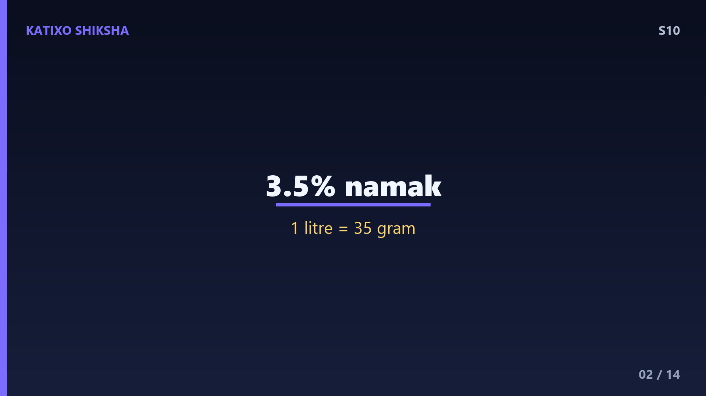
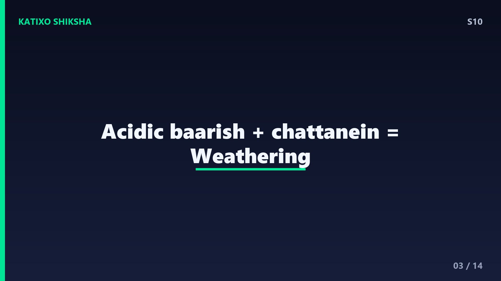
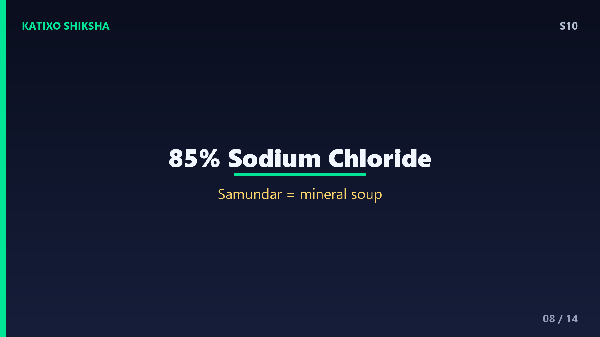
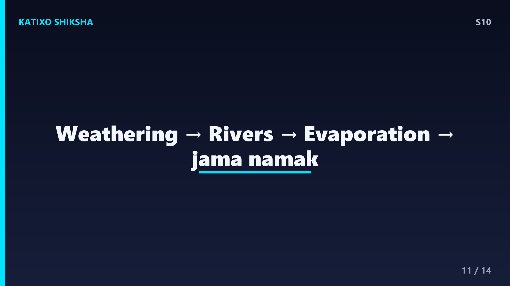

S10 — Samundar Ka Paani Khara Kyun Hota Hai?
Slide 1दोस्तों, कभी समुद्र में नहाते वक्त गलती से एक घूँट पानी मुँह में चला गया हो — तो याद होगा वो कितना खारा, salty लगता है! पर ज़रा सोचो — बारिश का पानी तो मीठा होता है, नदियों का पानी भी मीठा, फिर समुद्र का पानी इतना नमकीन क्यों? और कितना? आज Katixo Shiksha पर हम इसी मज़ेदार रहस्य को सुलझाएँगे — पहाड़ों से लेकर समुद्र की गहराई तक, करोड़ों साल की एक कहानी! चलो शुरू करते हैं!

Slide 2पहले कुछ numbers देखो दोस्तों. समुद्र के पानी में करीब 3.5 percent नमक घुला होता है. यानी हर 1 litre समुद्री पानी में करीब 35 gram नमक! इसे scientists salinity यानी लवणता कहते हैं. कुल मिलाकर महासागरों में इतना नमक है कि अगर उसे निकालकर पूरी पृथ्वी की ज़मीन पर फैला दें, तो करीब 150 meter मोटी परत बन जाए — एक 40 मंज़िला इमारत जितनी ऊँची! यानी समुद्र में नमक की मात्रा सच में हैरान कर देने वाली है.

Slide 3अब असली कहानी — यह नमक आया कहाँ से? सबसे बड़ा स्रोत हैं हमारी ज़मीन की चट्टानें. जब बारिश होती है, तो बारिश का पानी पूरी तरह शुद्ध नहीं होता — हवा की carbon dioxide घुलने से वो हल्का सा अम्लीय, acidic हो जाता है. यही हल्का तेज़ाबी पानी जब पहाड़ों और चट्टानों पर गिरता और बहता है, तो धीरे-धीरे उन्हें घिसता है. इस प्रक्रिया को कहते हैं weathering यानी अपक्षय. इसी से चट्टानों से तरह-तरह के minerals और लवण घुलकर बाहर आते हैं.
Slide 4अब इन घुले हुए minerals का सफ़र समझो. बारिश का पानी चट्टानों से नमक और खनिज घोलकर छोटी धाराओं में बहता है, फिर नदियों में, और आख़िर में नदियाँ इन्हें समुद्र तक पहुँचा देती हैं. यानी नदियाँ लगातार थोड़ा-थोड़ा नमक समुद्र में डालती रहती हैं. पर रुको — फिर नदियों का पानी मीठा क्यों लगता है? क्योंकि नदियों में नमक की मात्रा बहुत-बहुत कम होती है, इतनी कम कि स्वाद में पता ही नहीं चलती. असली खेल तो समुद्र में होता है — आगे समझते हैं!
Slide 5अब सबसे ज़रूरी बात — evaporation यानी वाष्पीकरण. सूरज की गर्मी से समुद्र की सतह से पानी लगातार भाप बनकर उड़ता रहता है. पर यहाँ trick यह है — जब पानी भाप बनता है, तो सिर्फ शुद्ध H2O ऊपर जाता है, नमक पीछे समुद्र में ही रह जाता है! फिर वही भाप बादल बनती है, बारिश होती है, और साफ़ मीठा पानी फिर ज़मीन पर बरसता है. यानी नदियाँ नमक लाती रहती हैं, पर evaporation सिर्फ पानी ले जाता है, नमक नहीं — इसलिए नमक समुद्र में जमा होता जाता है.
Slide 6तो असली राज़ यही है दोस्तों — यह करोड़ों साल से चलने वाली एक प्रक्रिया है. नदियाँ अरबों-खरबों सालों से लगातार थोड़ा-थोड़ा नमक समुद्र में डालती आई हैं, और evaporation उस नमक को पीछे छोड़ता गया. यानी समुद्र एक विशाल कटोरे जैसा है, जिसमें पानी आता और भाप बनकर उड़ता रहता है, पर नमक हमेशा जमा होता रहता है. इतने लंबे समय में यह नमक इकट्ठा होकर समुद्र को इतना खारा बना देता है. एक छोटा सा रोज़ का असर, करोड़ों साल में बहुत बड़ा बन जाता है!
Slide 7पर नमक का दूसरा स्रोत भी है — समुद्र की गहराई में मौजूद hydrothermal vents यानी गर्म पानी के झरने. समुद्र तल में दरारों से पानी अंदर रिसता है, धरती के भीतर की गर्मी से बहुत गरम होता है, चट्टानों से minerals घोलता है, और फिर वापस समुद्र में फूट पड़ता है — अपने साथ ढेर सारे घुले हुए तत्व लेकर. इसके अलावा समुद्र के नीचे ज्वालामुखी, underwater volcanoes भी फटने पर पानी में minerals छोड़ते हैं. यानी नमक सिर्फ ऊपर ज़मीन से नहीं, समुद्र की तह से भी आता है!

Slide 8अब समझो समुद्र का नमक है किस चीज़ का बना. जिसे हम table salt कहते हैं, वो है sodium chloride. समुद्री नमक का सबसे बड़ा हिस्सा भी यही है — करीब 85 percent. जब sodium chloride पानी में घुलता है, तो वो टूटकर बनता है sodium और chloride ions — यही समुद्र को खारा बनाते हैं. पर समुद्र में सिर्फ यही नहीं — magnesium, calcium, potassium, sulphate जैसे और भी कई तत्व घुले होते हैं. यानी समुद्र असल में एक mineral soup है, जिसमें धरती के लगभग सारे तत्व किसी न किसी मात्रा में मौजूद हैं!
Slide 9अब एक मज़ेदार सवाल — क्या सारे समुद्र बराबर खारे हैं? बिल्कुल नहीं! जहाँ गर्मी और evaporation ज़्यादा हो और नदियों का मीठा पानी कम मिले, वहाँ पानी ज़्यादा खारा होता है. जैसे Red Sea और Persian Gulf सबसे खारे माने जाते हैं. वहीं जहाँ बारिश ज़्यादा हो या बड़ी नदियाँ या बर्फ़ पिघलकर मीठा पानी मिलाएँ, वहाँ salinity कम होती है, जैसे ध्रुवों के पास. और सबसे चौंकाने वाली जगह — Dead Sea! यह इतना खारा है कि वहाँ इंसान बिना तैरे ही पानी पर आराम से तैरता रहता है!
Slide 10अब बड़ा सवाल — क्या समुद्र और खारा होता जा रहा है? जवाब है, नहीं! समुद्र की salinity करोड़ों सालों से काफ़ी हद तक एक जैसी बनी हुई है. ऐसा इसलिए क्योंकि नमक सिर्फ आता नहीं, हटता भी है. नमक के कुछ तत्व समुद्री जीव अपने खोल और हड्डियाँ बनाने में इस्तेमाल करते हैं, कुछ समुद्र तल पर जमकर चट्टान बन जाते हैं, और कुछ उथली खाड़ियों में पानी सूखने से नमक की परतें बना देते हैं. यानी नमक का आना और जाना लगभग balance में है — एक खूबसूरत प्राकृतिक संतुलन!

Slide 11तो अब तक की कहानी समेटो दोस्तों. समुद्र का पानी खारा है क्योंकि बारिश चट्टानों को घिसकर उनसे नमक और minerals घोलती है, नदियाँ उन्हें समुद्र तक लाती हैं, और evaporation सिर्फ शुद्ध पानी उड़ाकर नमक पीछे छोड़ देता है — यह करोड़ों साल से चल रहा है. साथ में समुद्र की तह के hydrothermal vents और ज्वालामुखी भी नमक जोड़ते हैं. और समुद्री जीव और चट्टानें नमक हटाकर इसे balance में रखते हैं. एक रोज़ की छोटी प्रक्रिया, अरबों साल में पूरे महासागर को खारा बना देती है!
Slide 12Quick brain check! तीन सवाल, ज़रा दिमाग लगाओ. पहला — समुद्र का नमक मुख्य रूप से कहाँ से आता है, और बारिश चट्टानों को घिसने वाली प्रक्रिया का नाम क्या है? दूसरा — कौन सी प्रक्रिया सिर्फ शुद्ध पानी उड़ाती है और नमक समुद्र में ही छोड़ देती है? तीसरा — समुद्री नमक का सबसे बड़ा हिस्सा कौन सा रासायनिक यौगिक है? अभी video PAUSE करो, सोचो, खुद जवाब दो. फिर अगली slide पर सही answers मिलेंगे. चलो, pause करो!
Slide 13जवाब देखते हैं दोस्तों! पहला — समुद्र का नमक मुख्य रूप से ज़मीन की चट्टानों से आता है, और बारिश के पानी से चट्टानों के घिसने की प्रक्रिया को कहते हैं weathering यानी अपक्षय. दूसरा — वो प्रक्रिया है evaporation यानी वाष्पीकरण, जिसमें सिर्फ शुद्ध पानी भाप बनकर उड़ता है और नमक पीछे रह जाता है. तीसरा — समुद्री नमक का सबसे बड़ा हिस्सा है sodium chloride, यानी हमारा साधारण table salt. तीनों सही? शाबाश, अब तुम समुद्र के नमक के असली expert बन गए!
Slide 14तो final recap. समुद्र खारा इसलिए है क्योंकि बारिश weathering से चट्टानों से नमक घोलती है, नदियाँ उसे समुद्र तक लाती हैं, और evaporation सिर्फ पानी उड़ाकर नमक जमा करता रहता है — करोड़ों साल से. समुद्र की तह के vents और ज्वालामुखी भी इसमें जोड़ते हैं, और जीव-जंतु तथा चट्टानें नमक हटाकर balance बनाए रखते हैं. नमक का ज़्यादातर हिस्सा है sodium chloride. दोस्तों, यह था Katixo Shiksha का यह season का सफ़र — पर सवाल पूछना कभी मत छोड़ना, क्योंकि अगला season और भी जबरदस्त questions लेकर आ रहा है! Subscribe करना मत भूलना! Bye!